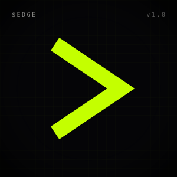
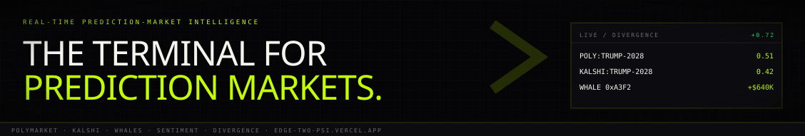

03.09 / Social Asset Pack · LinkedIn
LinkedIn. Serious surface.
Company page tuned for finance + fintech. 300×300 logo (no circle — LinkedIn renders square with rounded corners), 1128×191 banner. Voice: declarative, receipts-first, no degen jargon.
Company Logo
03.09.01 · 300×300

300 × 300 · SVG · LinkedIn rounds corners; square source is correct
Page Banner
03.09.02 · 1128×191

1128 × 191 · SVG
About Copy
03.09.03 · 2000 char
About
Company description
$EDGE is the real-time intelligence terminal for prediction markets. Prediction markets — Polymarket, Kalshi, and the rest — have quietly become the most accurate near-term forecasters on the internet. They out-called every traditional pollster in 2024, and volume has more than 10x'd since. The market for high-fidelity, low-latency intelligence on what prediction markets are pricing has not yet been built. $EDGE is that intelligence layer. We aggregate every Polymarket and Kalshi market into a single sortable, filterable, latency-tolerant grid. We surface whale flow in real time — the same way an FX desk watches central-bank tape. We score market prices against aggregated sentiment from X, Farcaster, and Reddit, producing a "divergence" reading that measures the gap between where the money is and what the mouth is saying. That gap is, by construction, the edge. The terminal is in early access at edge-two-psi.vercel.app. The accompanying token, $EDGE, launches on Solana and gates premium features by holding tier — webhook access, push notifications, governance over which markets get full bot coverage, gated alpha rooms. Built by the $EDGE Traders. Headquartered remotely; data flow is the only office that matters.
Pinned Announcement
03.09.04 · 3000 char
launch post · pin to page
Pinned post
Announcing $EDGE — the real-time intelligence terminal for prediction markets. The thesis: In 2024, prediction markets out-called every major pollster — Polymarket's Trump-Harris price moved hours ahead of network calls. Kalshi added regulated event contracts that institutional flow can actually touch. Combined volume has more than 10x'd in 18 months. And yet the tooling that traders use to read these markets in real time is, charitably, group chats and refresh buttons. We built the terminal we wanted to use. What's in v1 (live now at edge-two-psi.vercel.app): • Every Polymarket and Kalshi market in one sortable grid, with cross-venue arbitrage flagged at the row level. • Whale-flow tape — wallet-level entries ≥$25K, surfaced in real time with historical hit-rate per wallet. • A sentiment radar that scores aggregated X / Farcaster / Reddit chatter against market price, producing a "divergence" reading (the gap between Money and Mouth). • A public picker algorithm with an immutable track record. No retcons. What's coming in v2: • Custom alert webhooks for any divergence ≥X threshold on any market. • Cross-venue normalization (synthetic Polymarket × Kalshi prices). • A research suite for back-testing strategies against the historical whale corpus. We're a two-person team: an Trader (frontend / product) and an Trader (data / infra). We use this every day for our own trading. If you're a quant, a market researcher, a trader, or a fintech trader who has wanted to take prediction markets seriously and couldn't find the right surface — you're who we're building for. Try the terminal: https://edge-two-psi.vercel.app/ Follow this page for product updates, market notes, and the occasional public divergence dossier. The token, $EDGE, gates premium tiers — webhooks, push, governance. Launching on Solana via pump.fun. Details on the site. Watch the action. Before you bet. — the $EDGE Traders
Setup Notes
03.09.05
Create Company Page. Industry:
Financial Services. Size: 2–10. Founded: 2026. Tagline from bio.md.Upload
pfp.svg (export 300×300 PNG) and banner.svg (export 1128×191 PNG).Paste About copy. Set website
edge-two-psi.vercel.app. Set specialties (see bio.md).Publish the pinned announcement. Pin it.
Company page is the only LinkedIn surface — no personal profiles, since the team operates under one shared brand identity. Compensate by encouraging holders + KOLs to reshare with their own commentary.
Cadence: 1 post/week. Mix market notes, product updates, thesis pieces. No GIFs, no generic motivational posts, no comment-bait polls.